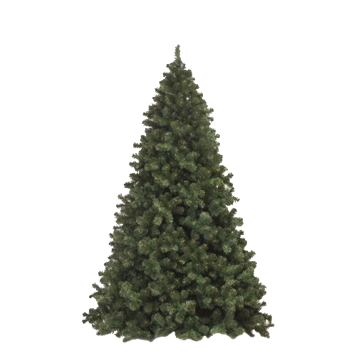

Choinka – ustrojone drzewko świerku lub jodły (rzadziej sosny),
naturalne lub sztuczne, pierwotnie wiązane z przedchrześcijańską tradycją ludową
i kultem wiecznie zielonego drzewka, a obecnie będące nieodłączną ozdobą
w czasie świąt Bożego Narodzenia[1].
naturalne lub sztuczne, pierwotnie wiązane z przedchrześcijańską tradycją ludową
i kultem wiecznie zielonego drzewka, a obecnie będące nieodłączną ozdobą
w czasie świąt Bożego Narodzenia[1].